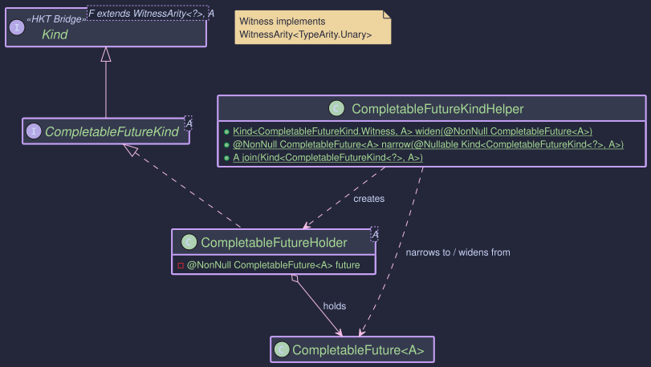

The CompletableFutureMonad:
Asynchronous Computations with CompletableFuture
- How to compose asynchronous operations functionally
- Using MonadError capabilities for async error handling and recovery
- Building non-blocking workflows with
map,flatMap, andhandleErrorWith - Integration with EitherT for combining async operations with typed errors
- Real-world patterns for resilient microservice communication
The Problem: Async Composition Without Structure
Java's CompletableFuture is powerful, but composing multiple async operations quickly becomes unwieldy. Consider a typical microservice scenario — fetching a user, looking up their subscription, then calculating a discount:
// Traditional CompletableFuture chaining
CompletableFuture<Discount> result =
userService.findUser(userId)
.thenCompose(user ->
subscriptionService.getSubscription(user.subscriptionId())
.thenCompose(sub ->
pricingService.calculateDiscount(user, sub)
.exceptionally(ex -> Discount.none())));
Each level of thenCompose indents further. Error handling with exceptionally or handle dangles awkwardly at the end, applies only to the innermost stage, and loses type information — every error becomes a generic Throwable. If you need different recovery strategies for different failures, you end up with nested try/catch inside your lambdas, and the functional style collapses.
The CompletableFutureMonad gives you a structured alternative: standard map, flatMap, and handleErrorWith operations that compose cleanly, and the ability to write generic code that works across any monadic type — not just CompletableFuture.
Core Components
Higher-Kinded Bridge for CompletableFuture

TypeClasses

The simulation for CompletableFuture involves these key pieces:
| Component | Role |
|---|---|
CompletableFuture<A> | Standard Java async computation |
CompletableFutureKind<A> | HKT marker (Kind<CompletableFutureKind.Witness, A>) — enables generic type class programming |
CompletableFutureKindHelper | Bridge utilities: widen(), narrow(), and join() for blocking extraction |
CompletableFutureMonad | Implements MonadError<CompletableFutureKind.Witness, Throwable> — provides map, flatMap, of, ap, raiseError, and handleErrorWith |
The type class operations correspond directly to CompletableFuture methods you already know:
| Type Class Operation | CompletableFuture Equivalent |
|---|---|
map(f, fa) | thenApply(f) |
flatMap(f, fa) | thenCompose(f) |
ap(ff, fa) | thenCombine(ff, (a, f) -> f.apply(a)) |
of(value) | completedFuture(value) |
raiseError(ex) | failedFuture(ex) |
handleErrorWith(fa, handler) | exceptionallyCompose(handler) |
The difference is that these operations work through the Kind abstraction, so your code becomes reusable across any monadic type — swap CompletableFuture for IO, Either, or VTask without changing the logic.
Working with CompletableFutureMonad
The following examples build on a running scenario: an async service that fetches user data, validates subscriptions, and handles failures gracefully.
public void createExample() {
// Get the MonadError instance
CompletableFutureMonad futureMonad = CompletableFutureMonad.INSTANCE;
// --- Lift a pure value into an already-completed future ---
Kind<CompletableFutureKind.Witness, String> successKind = futureMonad.of("Success!");
// --- Create a failed future from an exception ---
RuntimeException error = new RuntimeException("Something went wrong");
Kind<CompletableFutureKind.Witness, String> failureKind = futureMonad.raiseError(error);
// --- Wrap an existing CompletableFuture ---
CompletableFuture<Integer> existingFuture = CompletableFuture.supplyAsync(() -> {
try {
TimeUnit.MILLISECONDS.sleep(20);
} catch (InterruptedException e) { /* ignore */ }
return 123;
});
Kind<CompletableFutureKind.Witness, Integer> wrappedExisting = FUTURE.widen(existingFuture);
CompletableFuture<Integer> failedExisting = new CompletableFuture<>();
failedExisting.completeExceptionally(new IllegalArgumentException("Bad input"));
Kind<CompletableFutureKind.Witness, Integer> wrappedFailed = FUTURE.widen(failedExisting);
// Unwrap back to CompletableFuture at system boundaries
CompletableFuture<String> unwrappedSuccess = FUTURE.narrow(successKind);
CompletableFuture<String> unwrappedFailure = FUTURE.narrow(failureKind);
}
These examples show how the type class instance composes async operations — the same map/flatMap vocabulary you use with Either, IO, or any other monad.
public void monadExample() {
CompletableFutureMonad futureMonad = CompletableFutureMonad.INSTANCE;
// --- map: transform the result when it completes ---
Kind<CompletableFutureKind.Witness, Integer> initialValueKind = futureMonad.of(10);
Kind<CompletableFutureKind.Witness, String> mappedKind = futureMonad.map(
value -> "Result: " + value,
initialValueKind
);
System.out.println("Map Result: " + FUTURE.join(mappedKind)); // Output: Result: 10
// --- flatMap: sequence async operations that depend on previous results ---
Function<String, Kind<CompletableFutureKind.Witness, String>> asyncStep2 =
input -> FUTURE.widen(
CompletableFuture.supplyAsync(() -> input + " -> Step2 Done")
);
Kind<CompletableFutureKind.Witness, String> flatMappedKind = futureMonad.flatMap(
asyncStep2,
mappedKind // "Result: 10" feeds into asyncStep2
);
System.out.println("FlatMap Result: " + FUTURE.join(flatMappedKind));
// Output: Result: 10 -> Step2 Done
// --- ap: apply a function from one future to a value from another ---
Kind<CompletableFutureKind.Witness, Function<Integer, String>> funcKind =
futureMonad.of(i -> "FuncResult:" + i);
Kind<CompletableFutureKind.Witness, Integer> valKind = futureMonad.of(25);
Kind<CompletableFutureKind.Witness, String> apResult = futureMonad.ap(funcKind, valKind);
System.out.println("Ap Result: " + FUTURE.join(apResult)); // Output: FuncResult:25
// --- map2: combine two independent futures ---
Kind<CompletableFutureKind.Witness, Integer> f1 = futureMonad.of(5);
Kind<CompletableFutureKind.Witness, String> f2 = futureMonad.of("abc");
BiFunction<Integer, String, String> combine = (i, s) -> s + i;
Kind<CompletableFutureKind.Witness, String> map2Result = futureMonad.map2(f1, f2, combine);
System.out.println("Map2 Result: " + FUTURE.join(map2Result)); // Output: abc5
}
This is where CompletableFutureMonad shines. Unlike exceptionally which returns a plain value, handleErrorWith returns a new Kind — so recovery itself can be asynchronous.
public void errorHandlingExample(){
CompletableFutureMonad futureMonad = CompletableFutureMonad.INSTANCE;
Kind<CompletableFutureKind.Witness, String> failedKind =
futureMonad.raiseError(new IllegalStateException("Processing Failed"));
// Recovery handler — inspect the error and return a new async computation
Function<Throwable, Kind<CompletableFutureKind.Witness, String>> recoveryHandler =
error -> {
if (error instanceof IllegalStateException) {
// Recovery can itself be async
return FUTURE.widen(CompletableFuture.supplyAsync(() ->
"Recovered from: " + error.getMessage()));
}
// Re-raise anything we can't handle
return futureMonad.raiseError(
new RuntimeException("Recovery failed", error));
};
// Apply the handler — transforms the failed future into a recovered one
Kind<CompletableFutureKind.Witness, String> recovered =
futureMonad.handleErrorWith(failedKind, recoveryHandler);
System.out.println(FUTURE.join(recovered));
// Output: Recovered from: Processing Failed
// Success values pass through untouched — the handler is never called
Kind<CompletableFutureKind.Witness, String> successKind = futureMonad.of("All Good");
Kind<CompletableFutureKind.Witness, String> handledSuccess =
futureMonad.handleErrorWith(successKind, recoveryHandler);
System.out.println(FUTURE.join(handledSuccess));
// Output: All Good
}
The handler receives the cause of the failure, unwrapped from CompletionException when necessary. This lets you pattern-match on specific exception types and choose recovery strategies — retry, fallback, or re-raise — all within the same compositional pipeline.
When to Use CompletableFutureMonad
| Scenario | Use |
|---|---|
| Writing generic code that works across monads | CompletableFutureMonad — your logic programs against Kind<F, A> |
| Composing async workflows with typed error propagation | Combine with EitherT — see the Order Workflow |
| Straightforward async pipelines in application code | Prefer CompletableFuturePath for fluent API |
| Virtual-thread concurrency | Consider VTaskPath instead |
CompletableFutureMonadimplementsMonadError<CompletableFutureKind.Witness, Throwable>, giving youmap,flatMap,of,ap,raiseError, andhandleErrorWithover async computations.handleErrorWithis the key differentiator — recovery can itself be asynchronous, unlikeexceptionallywhich forces synchronous fallback.- Use
CompletableFutureKindHelper.join()to block and extract results at system boundaries (tests,mainmethods). Avoid calling it mid-pipeline. - For the HKT bridge:
widen()wraps aCompletableFutureintoKind,narrow()unwraps it back. Both are low-cost cast operations.
For most application-level use cases, prefer CompletableFuturePath which wraps CompletableFuture and provides:
- Fluent composition with
map,via,recover - Seamless integration with the Focus DSL for structural navigation
- A consistent API shared across all effect types
// Instead of manual Kind chaining:
Kind<CompletableFutureKind.Witness, User> user = FUTURE.widen(findUser(id));
Kind<CompletableFutureKind.Witness, Order> order = futureMonad.flatMap(
u -> FUTURE.widen(createOrder(u)), user);
// Use CompletableFuturePath for cleaner composition:
CompletableFuturePath<Order> order = CompletableFuturePath.fromFuture(findUser(id))
.via(u -> CompletableFuturePath.fromFuture(createOrder(u)));
See Migration Cookbook: Recipe 4 for a complete before/after walkthrough, and Effect Path Overview for the complete guide.
CompletableFuture has dedicated JMH benchmarks measuring async composition overhead, error recovery, and chain depth. Key expectations:
of/raiseErrorare very fast — they wrap already-completed futures with no thread schedulingflatMapchains add minimal overhead beyond the underlyingthenComposecosthandleErrorWithmatchesexceptionallyComposeperformance while providing stronger composition guarantees
./gradlew :hkj-benchmarks:jmh --includes=".*CompletableFutureBenchmark.*"
See Benchmarks & Performance for full details, expected ratios, and how to interpret results.
Previous: Supported Types Next: Either